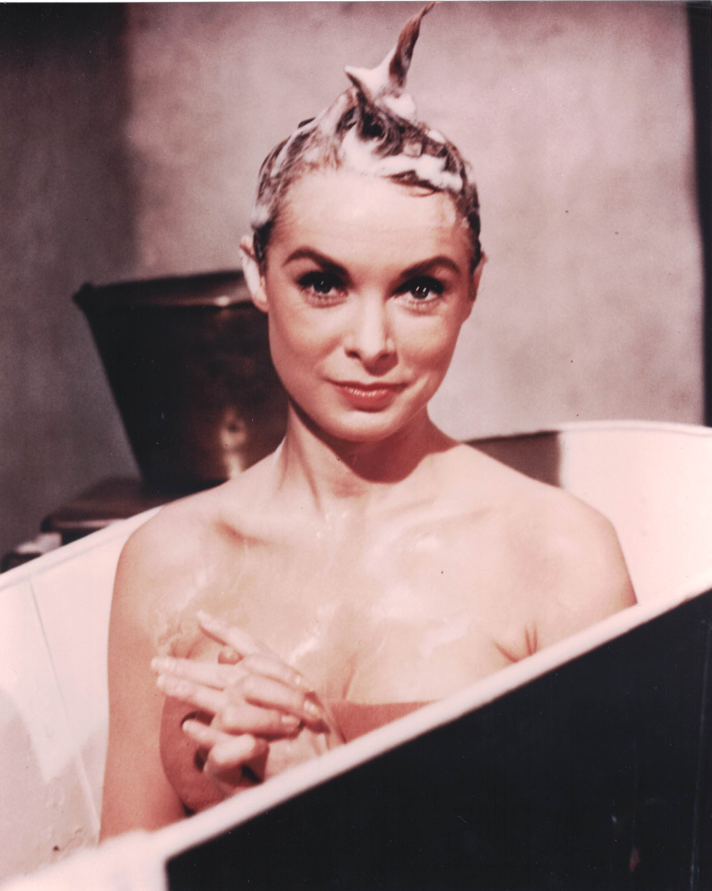

Product No. HEC-0095
$12.99
Shipping: $8.95
Description
8x10 color photograph
Full Description
Jean Simmons (Deceased) was a British-American actress whose elegant screen presence and dramatic versatility made her one of the most distinguished stars of classic Hollywood. Born Jean Merilyn Simmons on January 31, 1929, in London, England, she began acting as a teenager and quickly earned acclaim in British films. Simmons gained international attention with roles in "Great Expectations," "Black Narcissus," and "Hamlet." Her performance as Ophelia opposite Laurence Olivier in "Hamlet" earned her an Academy Award nomination for Best Supporting Actress. After moving to Hollywood, Simmons starred in a wide range of major productions. Her notable films include "The Robe," "The Egyptian," "Guys and Dolls," "The Big Country," "Elmer Gantry," "Spartacus," and "The Grass Is Greener." In "Guys and Dolls," she starred opposite Marlon Brando, Frank Sinatra, and Vivian Blaine, demonstrating both her dramatic and musical talents. Simmons continued working successfully in film and television for decades. Her later career included acclaimed television performances in "The Thorn Birds" and "North & South," and she won an Emmy Award for the miniseries "The Thorn Birds." Jean Simmons died on January 22, 2010, at age 80. Her long career in British cinema, classic Hollywood, epic films, musicals, and television made her one of the most respected actresses of her generation, and her autographs, photographs, and movie memorabilia remain popular with collectors.
Condition
Excellent condition